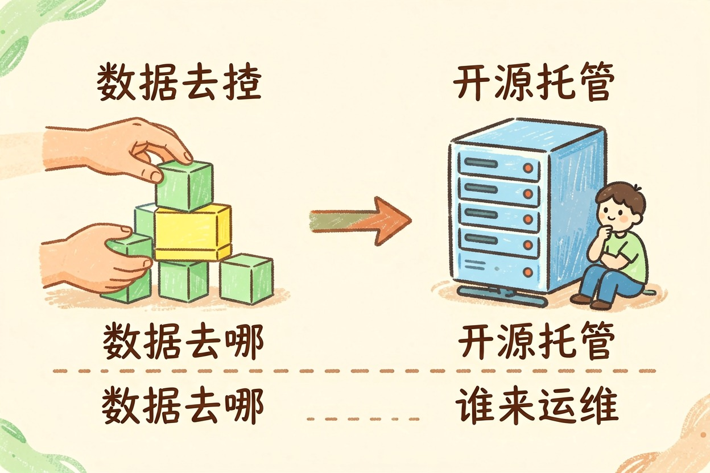

开源和闭源大模型：到底差在哪 — Learntide
闭源模型像租来的精装房，开源模型像买下的毛坯，自由度和麻烦都一起交给你。
开源模型和闭源模型区别是本文的核心主题，下面详细介绍如何使用。
开源模型和闭源模型区别：先用一句话说清
开源模型和闭源模型区别在哪？关键只看一件事：权重开不开放。闭源只给你一个接口，参数握在厂商手里。开源把权重公开，你能下载、能自己跑、能改。前者是买服务，后者是把东西搬回家自己折腾。
这条线一划，后面所有差异都跟着来。谁掌握数据、谁承担算力、谁能动模型本身。想先补底层概念，看 大模型是什么 更省事。
权重开不开，决定了你能做什么
顺带说一句，「开源」本身也分程度。有的放出权重却限制商用规模，有的连训练数据都不公开。下载前先把许可协议读完。
可控性、隐私与合规的取舍
闭源省心。打开就能用，算力、扩容、更新都归厂商管。代价是提示词和资料要发到外部，敏感行业往往过不了内部审查。
开源能把数据锁在内网。医疗、金融、政务这类场景，这一条常常是硬指标，谈不上加分。麻烦在于安全补丁、访问控制、日志留存，全得自己扛。
- 数据不敏感、要快上线：闭源
- 资料一步都不能出内网：开源
- 要改模型行为、要锁版本：开源
- 团队没有运维、没有显卡：闭源
成本账该怎么算

闭源按调用量计费。用量小的时候很便宜，量一大就开始心疼。开源前期投入重，服务器、显卡、人力都要摊进去，之后边际成本很低。
补充：开源模型和闭源模型区别的详细用法可参考上文步骤。
补充：开源模型和闭源模型区别的详细用法可参考上文步骤。
补充：开源模型和闭源模型区别的详细用法可参考上文步骤。
别只比单价。真正该算的是两三年的总账：调用量增长曲线、人力工资、机器折旧、模型迭代带来的重复投入。不少团队算完发现，中等规模下两条路花的钱差不多。
还有一笔隐性成本容易漏。开源要自己盯社区更新、自己做安全加固、自己解决兼容问题。这些活不出现在报价单上，却会实打实占掉工程师的时间。国内可选的底座越来越多，国产大模型有哪些 能帮你缩小选型范围。
关于开源模型和闭源模型区别，建议结合实操理解，多看多试。
---
按场景选，别按榜单排名选
常见做法是两头都用。闭源做原型，快速验证需求成不成立。跑通之后再评估，值不值得迁到开源自托管。
A: 掌握 开源模型和闭源模型区别 的关键在于多实践，建议先跑通基础流程再逐步深入。
Q: 开源模型和闭源模型区别 免费吗？ A: 大多数工具提供基础免费额度，具体以官网当前说明为准。
\\\`
初始化
assistant = kw.Assistant(name="开源模型和闭源模型区别")
本文信息核对于 2026-08-08。AI 产品的价格、免费额度与功能变动频繁，实际以各工具官网当前说明为准。